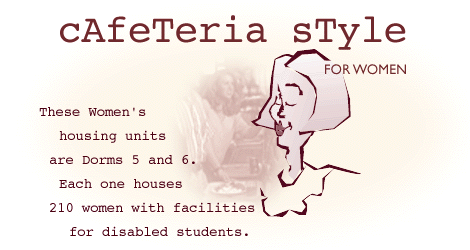

On-Campus Women's Cafeteria Style Housing
| The Ricks College Women's housing units are Dorms 5 and 6. Each one houses 210 women with facilities for disabled students. |
 |
Each building has a main lounge as with all on campus dorms. |
 |
The three bedroom apartments are shared by six women, two per bedroom. The
bedrooms contain two beds, two dressers, one desk, an eight-foot closet and some wall-mounted shelving. The double-sink bathroom has a tub/shower and toilet, with a floor-to-ceiling storage cabinet. Each apartment also has a MicrofridgeÆ unit with microwave and refrigerator-freezer, and a telephone with free local calls. |
 |
There is also a coin-operated laundry room in each building with Maytag® washers and dryers. |
For information about the meal plans which are available please visit
the
Ricks
College Food Services
website.
If you would like to apply to live in cafeteria-style housing at Ricks
College, please visit our
Application Page
Women's Cooking Style | Men's Cafeteria Style
On Campus Housing | Housing Home Page